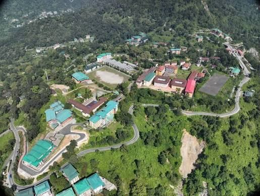

College of Science and Technology
ཚན་རིག་དང་འཕྲུལ་རིག་མཐོ་རིམ་སློབ་གྲྭ
ROYAL UNIVERSITY OF BHUTAN--- LEARN / INNOVATE / CREATE / BUILD A BETTER TOMORROW ---
Home: About college: Course categories: Library: News:


College of Science and Technology (CST) is a leading technical college in Bhutan under the Royal University of Bhutan. It offers various undergraduate programs in engineering, architecture, computer science, and other technology-related fields. CST focuses on providing students with practical knowledge, technical skills, innovation, and professional education to contribute to the development of Bhutan.
The College of Science and Technology (CST) is Bhutan’s premier engineering institution and a constituent college of the Royal University of Bhutan. Located in the scenic area of Rinchending, Phuentsholing, the college was established in 2001 to serve as the nation's core center for undergraduate engineering and technical education. CST offers specialized bachelor's degree programs in fields such as Civil Engineering, Electrical Engineering, Architecture, Software Engineering, and Information Technology, alongside master's programs in fields like Renewable Energy. It plays a critical role in building Bhutan's domestic workforce by combining rigorous hands-on learning, technological research, and community training, all while keeping Gross National Happiness (GNH) values at the core of its campus culture.
The College of Science and Technology (CST) was established in 2001 under the royal command of the Fourth King of Bhutan, meaning the premier engineering institute is currently celebrating its 25th anniversary milestone. Today, the campus is home to a vibrant community of roughly 1,000 students, welcoming an annual intake of about 385 new learners across its technical degree programs. Supporting this growing student body is a dedicated team of approximately 75 to 80 staff members, which includes specialized engineering faculty, lab assistants, and administrative personnel. Because the institution is highly residential, most of these students and staff live directly on the Rinchending campus, creating a close-knit environment focused on innovation, research, and technical education.

College of Science and Technology (CST) in Rinchending, Bhutan, is officially launching its Silver Jubilee celebrations on September 26, 2026, marking 25 years of academic and engineering excellence. The year-long anniversary events run from September 26, 2026, through September 26, 2027.
The celebration emphasizes Gross National Happiness (GNH) values combined with engineering and scientific research. According to CST President Dr. Cheki Dorji, the milestone highlights twenty-five years of transforming ideas into innovation and nurturing leaders across the globe.